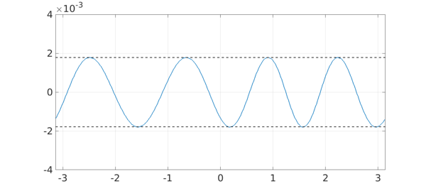

CF (Caratheodory-Fejer) approximation is a method of near-minimax polynomial or rational approximation based on the singular values of a Hankel matrix, and there are three previous Chebfun examples in this territory [3,4,6]. If the Hankel matrix contains Taylor coefficients, you get CF approximation on the unit disk, and with Chebyshev coefficients you get CF approximation on an interval. These ideas date to the work by myself and Gutknecht in the early 1980s. For references and an introduction to the mathematics see Chapter 20 of [3].
38 years ago in the summer of 1979 in Switzerland, CF approximation was born in a Eureka moment. I had been working on complex approximation and knew that the minimax error for degree $2$ polynomial approximation of $e^z$ on the unit disk was $\approx 0.17737$ (I still know this number by heart). I had predicted that this should closely match the largest singular value of the Hankel matrix formed from the Taylor coefficients $1/6,$ $1/24,$ $1/120,\dots .$ One weekend I visited Walter Gander at the Neutechnikum Buchs in Switzerland, and he had an interactive matrix calculator. I typed in the Hankel matrix, computed its singular values (well, actually its eigenvalues), and out popped 0.17737! From that moment I knew that CF approximation was going to work. Nowadays we can just type
format long norm(hankel(1./factorial(3:9)))
ans = 0.177373815210096
What about CF approximation of periodic functions, based on a Hankel matrix of Fourier coefficients? Periodic functions have become an important part of Chebfun in recent years, and recently, Mohsin Javed has written his DPhil thesis in approximation problems in this area, describing among other things a trigremez algorithm for periodic minimax approximation [2]. For CF approximation, the mathematics goes back to Gutknecht in 1983 [1], but it seems that in all the years since then, this has never been implemented. Finally, right now, Javed is in the process of writing trigcf, and here I'd like to reprise our Eureka moment last week, which assured us that periodic CF approximation would work.
Take a periodic function, like $f(t) = \exp(\sin(t))$ on $[-\pi,\pi]$:
f = chebfun('exp(sin(t))',[-pi,pi],'trig');
Extract its Fourier coefficients:
c = trigcoeffs(f)
c = -0.000000000000001 + 0.000000000000000i 0.000000000000000 + 0.000000000000020i 0.000000000000520 + 0.000000000000000i -0.000000000000000 - 0.000000000012490i -0.000000000275295 + 0.000000000000000i 0.000000000000000 + 0.000000005518386i 0.000000099606240 + 0.000000000000000i -0.000000000000000 - 0.000001599218231i -0.000022488661477 + 0.000000000000000i -0.000000000000000 + 0.000271463155957i 0.002737120221047 - 0.000000000000000i 0.000000000000000 - 0.022168424924332i -0.135747669767038 - 0.000000000000000i -0.000000000000000 + 0.565159103992485i 1.266065877752008 + 0.000000000000000i -0.000000000000000 - 0.565159103992485i -0.135747669767038 + 0.000000000000000i 0.000000000000000 + 0.022168424924332i 0.002737120221047 + 0.000000000000000i -0.000000000000000 - 0.000271463155957i -0.000022488661477 - 0.000000000000000i -0.000000000000000 + 0.000001599218231i 0.000000099606240 - 0.000000000000000i 0.000000000000000 - 0.000000005518386i -0.000000000275295 - 0.000000000000000i -0.000000000000000 + 0.000000000012490i 0.000000000000520 - 0.000000000000000i 0.000000000000000 - 0.000000000000020i -0.000000000000001 - 0.000000000000000i
For a real function like this we only need half of the series:
c = c(ceil(length(c)/2):end)
c = 1.266065877752008 + 0.000000000000000i -0.000000000000000 - 0.565159103992485i -0.135747669767038 + 0.000000000000000i 0.000000000000000 + 0.022168424924332i 0.002737120221047 + 0.000000000000000i -0.000000000000000 - 0.000271463155957i -0.000022488661477 - 0.000000000000000i -0.000000000000000 + 0.000001599218231i 0.000000099606240 - 0.000000000000000i 0.000000000000000 - 0.000000005518386i -0.000000000275295 - 0.000000000000000i -0.000000000000000 + 0.000000000012490i 0.000000000000520 - 0.000000000000000i 0.000000000000000 - 0.000000000000020i -0.000000000000001 - 0.000000000000000i
Choose your values $m$ and $n$ for type $(m,n)$ rational approximation:
m = 2; n = 1;
Make a Hankel matrix:
format short H = hankel(c(2+m-n:end)); H(1:3,1:3)
ans = -0.1357 + 0.0000i 0.0000 + 0.0222i 0.0027 + 0.0000i 0.0000 + 0.0222i 0.0027 + 0.0000i -0.0000 - 0.0003i 0.0027 + 0.0000i -0.0000 - 0.0003i -0.0000 - 0.0000i
Here is our CF estimate of the error in type $(m,n)$ approximation. The factor of 2 is introduced since we've made the Hankel matrix from just half of the Fourier series.
format long s = svd(H); 2*s(n+1)
ans = 0.001789066755256
How does this number compare with the true minimax error?
[p,q,r,err] = trigremez(f,m,n); err
err = 0.001789066754500
Spectacular agreement -- ten digits!
By working with singular vectors one can obtain the approximating rational function as well as its error. Since it matches the best approximation to ten digits, it will for all practical purpose be the same as what we compute with trigremez. The error curve shows periodic equioscillation through 8 points.
plot(f-p./q,'linewidth',1.6), grid on hold on, plot([-pi pi],err*[1 1],'--k') plot ([-pi pi],-err*[1 1],'--k'), ylim(.004*[-1 1])

References
-
M. H. Gutknecht, Rational Caratheodory--Fejer approximation on a disk, a circle, and an interval, Journal of Approximation Theory, 41 (1984), pp. 257-278.
-
M. Javed, Algorithms for Trigonometric Polynomial and Rational Approximation, DPhil thesis, University of Oxford, 2016.
-
M. Javed and L. N. Trefethen, Eight shades of rational approximation, Chebfun example, January 2016.
-
L. N. Trefethen, "Digital filters via CF approximation, Chebfun example, April 2014.
-
L. N. Trefethen, Approximation Theory and Approximation Practice, SIAM, 2013.
-
L. N. Trefethen and M. Javed, CF approximation 30 years ago, Chebfun example, July 2014.